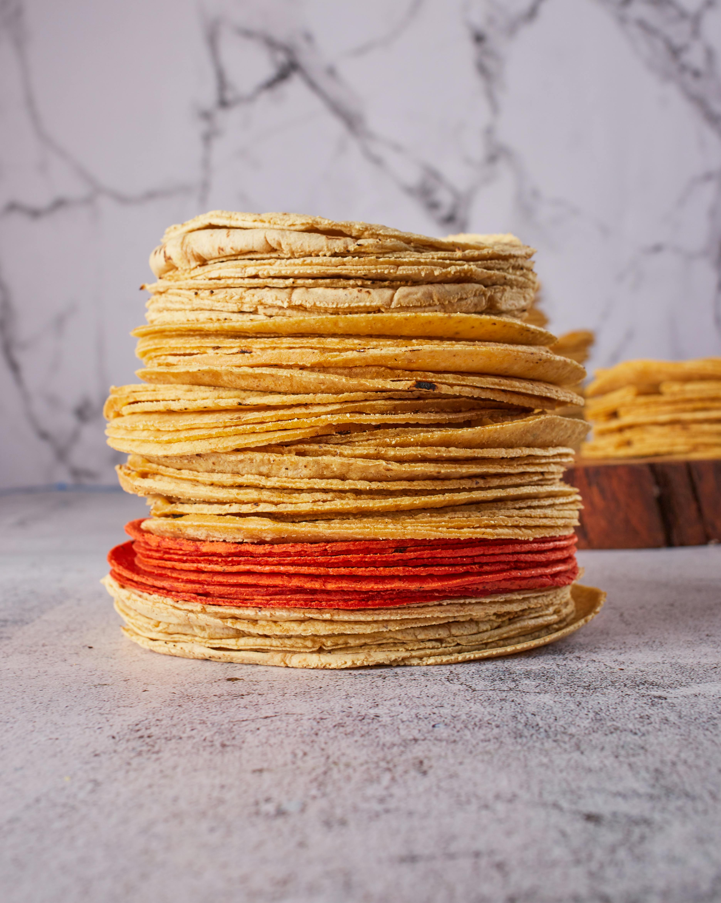

Corn Tortillas
Return Home

Photo by Israel Albornoz
Description
If you ever feel like your taco filling is the best it can be, but your tacos
are still missing something, this recipe for homemade corn tortillas might
be exactly what you need!
Store-bought corn tortillas do just fine for quick and easy tacos, but if you
have some extra time, making them yourself is a worthwhile investment. This
recipe requires only a few ingredients and can be easily scaled up. Enjoy!
Ingredients
- Masa Harina, 2 cups
- Broth (chicken or vegetable), 1 1/2 cups
- Kosher Salt, 1 tsp
- Non-stick spray
Steps
-
In a medium to large bowl, combine masa harina and kosher salt with your
chosen broth, mixing thoroughly with your hands or a fork
-
Once thoroughly mixed, let sit for 2 minutes then check for hydration --
dough should hold its shape and be firm to the touch, but not show any
signs of cracking
-
If dough is too loose, slowly mix in additional masa harina, or if
dough is too dry (starting to crack), slowly add in additional water
-
Once dough reaches desired hydration, cover with plastic wrap or a clean towel
and let sit for at least 5 minutes.
- After rest is complete, begin pinching small portions of dough and rolling
between clean hands to form balls of about 1" in diameter, placing
on a sheet pan lined with parchment paper
-
Once all dough has been formed into balls, use a tortilla press lined with parchment
paper or a cut-open freezer bag to flatten each one to desired thickness, setting
aside onto parchment paper
-
Pre-heat a dry cast iron skillet (or griddle, or comal) over medium heat
-
Once skillet is pre-heated, lightly apply non-stick spray then add a tortilla and cook
for 45-60 seconds on each side before transferring to a clean plate (under a clean towel)
or a tortilla holder (lined inside with clean towel)
-
Repeat for remainind dough balls, turn off heat, and serve tortillas while fresh!